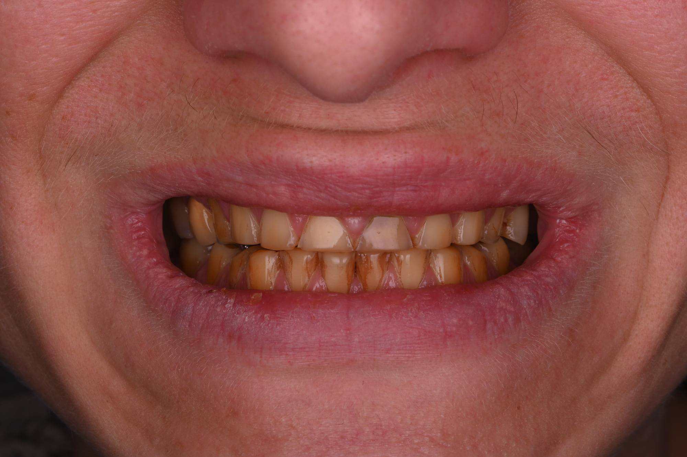
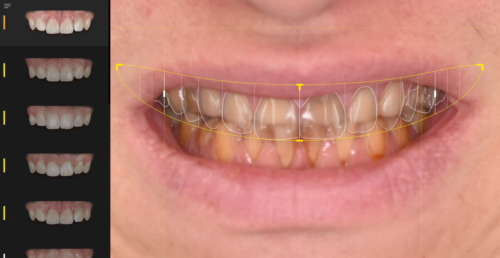
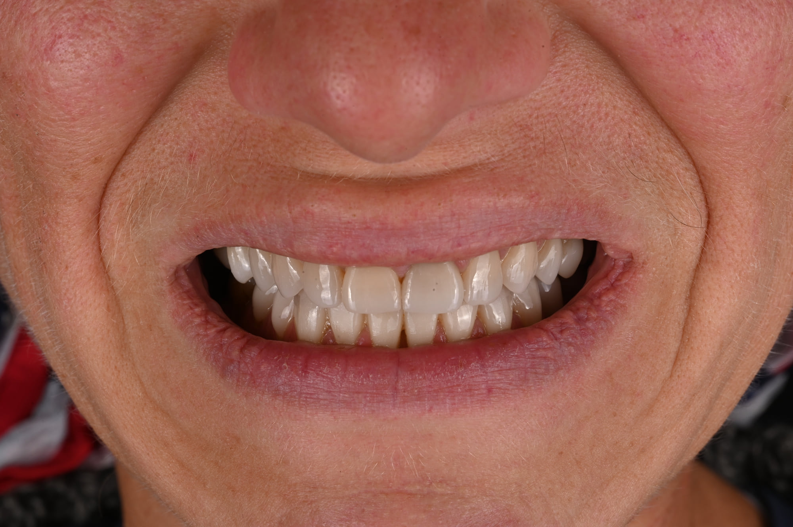

Accueil › Patient › Réhabilitation par facettes
Cas clinique
Planification d’une réhabilitation esthétique par facettes
Dans un projet étendu, la simulation numérique sert à deux choses : permettre à la patiente de voir le projet avant de commencer, et donner au praticien comme au prothésiste une même référence tout au long du traitement.

Praticien hospitalier, Pitié-Salpêtrière · CMME, Sainte-Anne

1 / 5
La situation initiale
Des usures importantes, un déficit esthétique majeur, et un projet qui concerne les deux arcades : ce cas montre à quoi sert la planification quand la réhabilitation est étendue.
Situation initiale
La situation de départ associe des usures importantes et un déficit esthétique majeur.
Le projet concerne les deux arcades. À cette échelle, décider dent par dent n’a pas de sens : il faut d’abord définir l’ensemble.
2 / 5
Visualiser avant de traiter
Visualiser le résultat avant de traiter
Une simulation numérique a été réalisée avec SmileCloud.
Elle permet à la patiente de visualiser une représentation précise du projet esthétique avant sa réalisation, et donc de se prononcer sur les formes et les proportions envisagées pendant qu’il est encore temps d’en discuter.
De la simulation au projet clinique
La simulation n’est pas uniquement une image de communication.
Elle constitue une référence commune : le praticien et le prothésiste travaillent ensuite autour du même projet, du premier essayage jusqu’à la céramique définitive.
Cette continuité entre planification numérique, travail clinique et réalisation prothétique contribue à rendre le projet plus prévisible et reproductible.
3 / 5
Une réhabilitation par vingt facettes
Une réhabilitation par 20 facettes
La réhabilitation a été réalisée avec 20 facettes en céramique Empress : 10 maxillaires et 10 mandibulaires.
4 / 5
Le résultat
Résultat clinique
Les trois temps du cas se lisent ensemble : la situation initiale, le projet construit avec la patiente, puis le résultat.
5 / 5
Ce que ce cas permet de comprendre
Ce que ce cas permet de comprendre
Dans les projets esthétiques étendus, la planification permet de définir un objectif commun avant le traitement et de maintenir une continuité entre le projet présenté au patient, les étapes cliniques et la réalisation prothétique.
Les photographies du cas


Les photographies présentent des situations cliniques individuelles. Le traitement et le résultat dépendent de la situation initiale et ne peuvent être transposés à un autre patient sans examen clinique.
Construire un projet avant de traiter
Le bilan esthétique permet d’analyser la situation, de construire un projet et d’en discuter avant toute décision thérapeutique.
Prendre rendez-vous